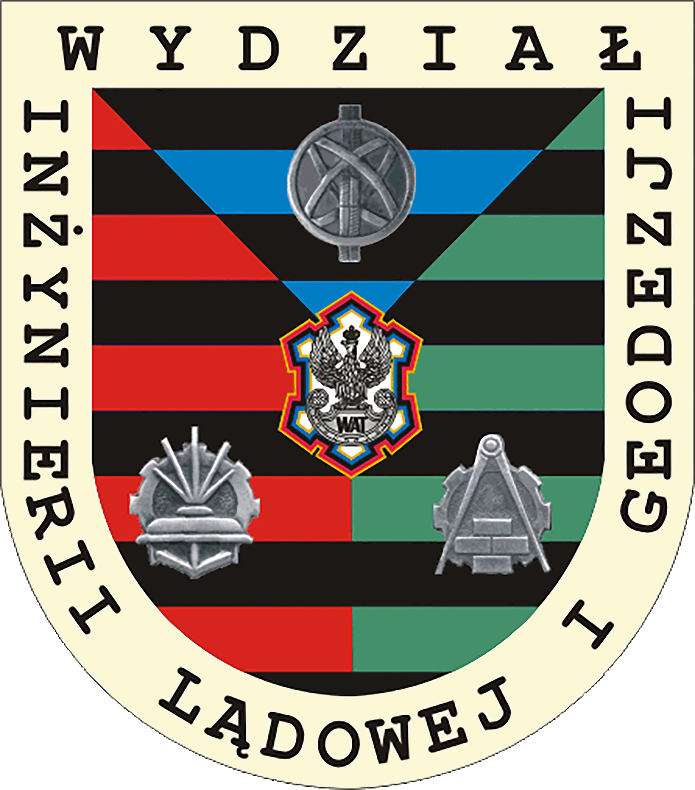

O Wydziale Inżynierii Lądowej i Geodezji
Wydział Inżynierii Lądowej i Geodezji jest jednym z siedmiu wydziałów akademickich WAT. Powstał 1 września 2006 na mocy uchwały Senatu Wojskowej Akademii Technicznej Nr 63/II/2006 z dnia 18 maja 2006 roku w wyniku przekształcenia Wydziału Inżynierii, Chemii i Fizyki Technicznej.
Nowy Wydział jest historycznym spadkobiercą: Fakultetu Wojsk Inżynieryjnych (1951), Wydziału Inżynieryjno-Saperskiego Fakultetu Wojsk Pancernych, Samochodowych i Inżynieryjnych (1958), Wydziału Inżynierii Wojskowej i Geodezji (1962), Wydziału Inżynierii Lądowej i Geodezji (1979).
Fakultet Wojsk Inżynieryjnych powstał w 1951 roku. Powołano go na zapotrzebowanie wojsk inżynieryjnych i służby komunikacji wojskowej. Mieli być na nim szkoleni specjaliści inżynierowie - dowódcy, inżynierowie - saperzy oraz inżynierowie - eksploatatorzy sprzętu i techniki wojskowej. W następnych latach Siły Zbrojne zwiększyły zadania i rozszerzyły zakres potrzeb. Zaczęto prowadzić szkolenie specjalistów dla wojsk lotniczych oraz służby inżynieryjno - budowlanej i topograficznej WP.
Szkolenie prowadzono na kilku specjalnościach: inżynieria wojskowa (czyli saperzy), instalacje budowlane, elektroenergetyka wojskowa. Pierwsze lata pracy Fakultetu były trudno. Na kadrę spadł obowiązek przygotowania od podstaw całego procesu szkolenia oraz bazy szkoleniowej i laboratoryjnej. Dbano również o podnoszenie kwalifikacji kadry dydaktycznej i inżynieryjno - technicznej.
W 1958 roku Fakultet Wojsk Inżynieryjnych przekształcono w Wydział Inżynieryjno-Saperski Fakultetu Wojsk Pancernych, Samochodowych i Inżynieryjnych. Okres ten charakteryzował się dynamicznym rozwojem dydaktyki, uruchamianiem bazy laboratoryjnej, kształtowaniem nowych specjalności, tworzeniem zespołów naukowo - badawczych i dydaktycznych.
Następnie, w roku 1962 powstaje Wydział Inżynierii Wojskowej i Geodezji, który w roku 1979 przekształca się w Wydział Inżynierii Lądowej i Geodezji. Utworzona struktura sprzyjała tworzeniu się zespołów naukowych podejmujących w szerszym zakresie prowadzenie prac naukowo-badawczych zarówno teoretycznych jak i praktycznych, użytecznych dla wojsk. Wzrósł poziom kształcenia i prestiż wydziału. Jego struktura zmieniła się. W grudniu 1994 roku w wyniku połączenia wydziałów: Inżynierii Lądowej i Geodezji oraz Chemii i Fizyki Technicznej powstał Wydział Inżynierii, Chemii i Fizyki Technicznej.
Wydział Inżynierii, Chemii i Fizyki Technicznej kształcił, w ramach studiów stacjonarnych i niestacjonarnych, studentów na kierunkach: budownictwo, geodezja i kartografia, chemia, inżynieria materiałowa oraz fizyka techniczna. Początkowo kształcenie prowadzono wyłącznie na potrzeby MON, jednak w ostatnich latach studia na Wydziale Inżynierii, Chemii i Fizyki Technicznej podejmowały także osoby cywilne. Najpierw w trybie niestacjonarnym, a począwszy od roku akademickiego 2002/2003 również w trybie stacjonarnym.
Obecnie na Wydziale Inżynierii Lądowej i Geodezji studiuje ponad 1000 studentów studiów stacjonarnych i niestacjonarnych. Najzdolniejsi studenci maja możliwość kształcenia się według indywidualnych programów studiów, oraz korzystać z wymiany międzynarodowej w ramach programu edukacyjnego SOCRATES.
W Wydziale Inżynierii Lądowej i Geodezji zatrudnionych jest 85 nauczycieli akademickich w tym 22 samodzielnych pracowników naukowych. Umożliwia to, poza działalnością dydaktyczną, prowadzenie badań naukowych na wysokim poziomie. Prace badawcze są finansowane przez Komitet Badań Naukowych oraz Unię Europejską. O poziomie naukowym badań realizowanych w wydziale świadczą liczne nagrody i wyróżnienia, zarówno krajowe jak i międzynarodowe. Naukowcy z wydziału w celu prezentacji wiedzy i osiągnięć są też zapraszani przez liczące się światowe ośrodki. Dzięki temu Wydział Inżynierii Lądowej i Geodezji współpracuje naukowo z wieloma ośrodkami krajowymi i zagranicznymi. Wyniki prac badawczych znajdują także zastosowanie w praktyce.